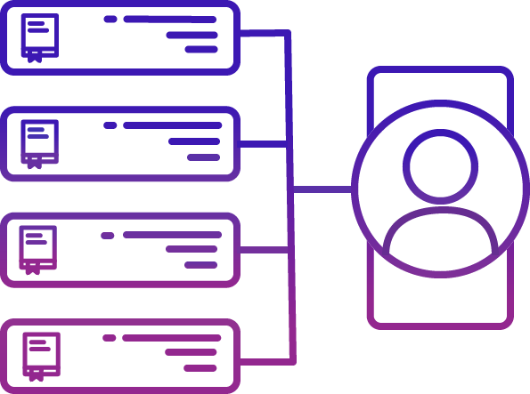
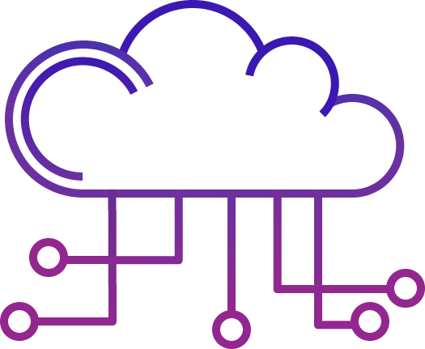

Hosting and Search
Search for Turbosrc projects accross different networks and blockchains making it easy to find statistics, trending projects and votes.
Security and Reputation
The Organization Network will have user verification and KYC/AML. Verified users can get their accounts recovered if they lose their keys, either by choosing us to manage their tokens or by selecting us as a trusted multi-signature party.

API
Turbosrc projects are accessible via an API in several languages. That way all sorts of automation can be done, including AI. All of the data generated by the protocol is available to the public.
